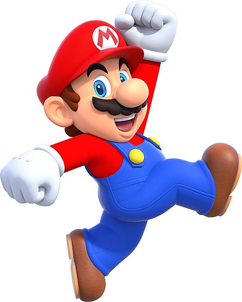
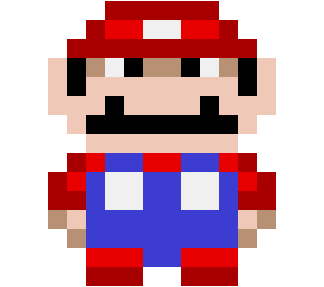

Персональный сайт Марио |
|---|
|

Здравствуйте! С Вами Марио - персонаж видеоигр компании Nintendo,
созданный Сигэру Миямото. Я являюсь талисманом Nintendo и
основным героем серии игр. Появился в более чем 200 видеоиграх с момента своего создания. Первое
появление произошло в аркаде Donkey Kong под изначальным именем Прыгун.
Хотя первоначально я был героем платформеров в настоящее время появляюсь в различных жанрах видеоигр,
таких как гонки, головоломки, RPG,
файтинги и спорт. Из-за моего частого обозначения и моего брата Луиджи
собирательным термином «Братья Марио» ходили слухи, что мое полное имя — Марио Марио.
В 1980-х Nintendo официально заявила, что ни я, ни Луиджи не имеют фамилии, однако 14 сентября 2015 года
(во время тридцатилетия серии Super Mario)
Сигэру Миямото официально объявил, что полное мое имя — Ма́рио Ма́рио, а Луиджи — Луи́джи Ма́рио.
Как талисман Nintendo, являюсь самым знаменитым персонажем в истории видеоигр, и мое изображение обычно связано с видеоиграми. Видеоигр Марио, в целом, было продано более 210 миллионов единиц, что делает мою серию бестселлером серий игр всех времён. Список моих профессий:
Я в рейтингах:
|
|---|
| Марио, персонаж игр. | 
|---|